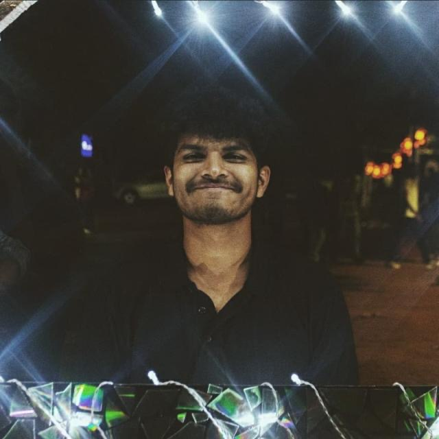
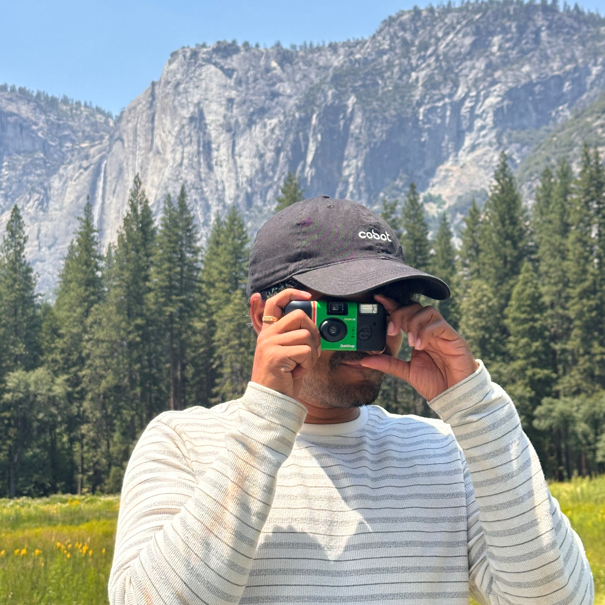
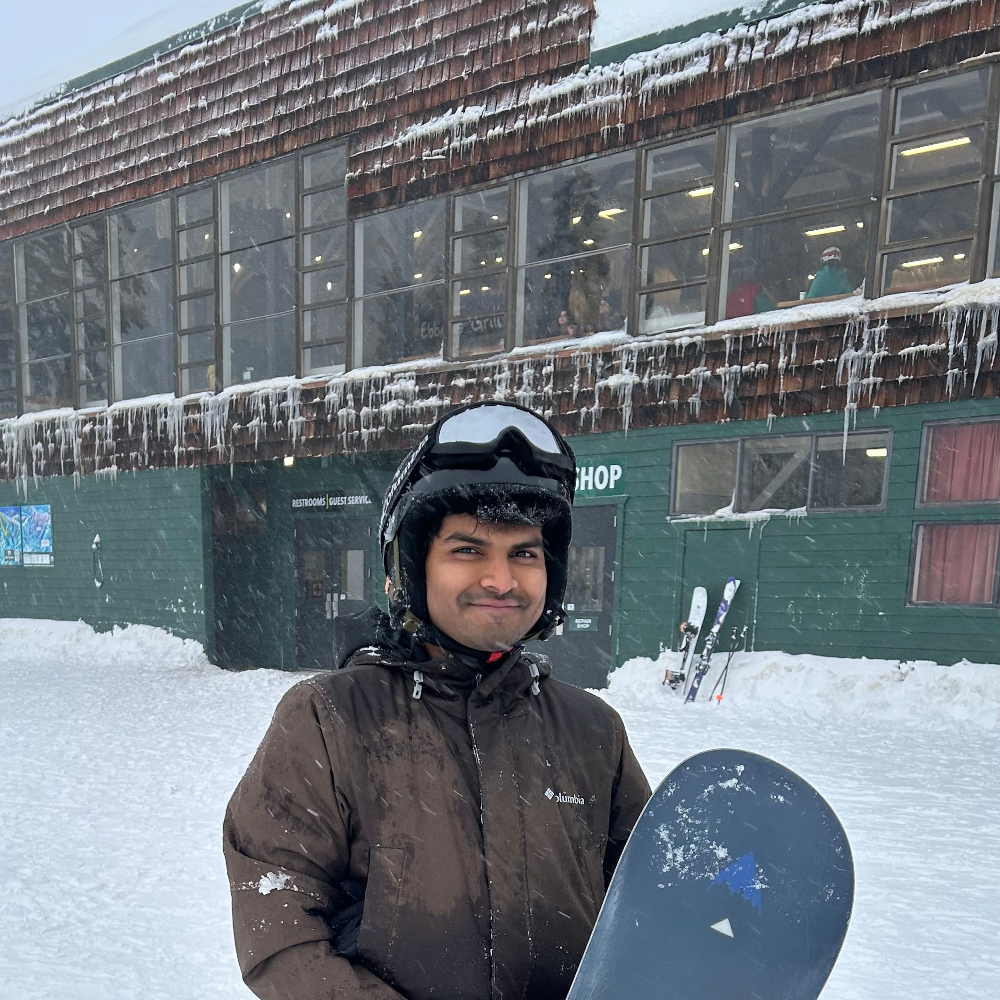
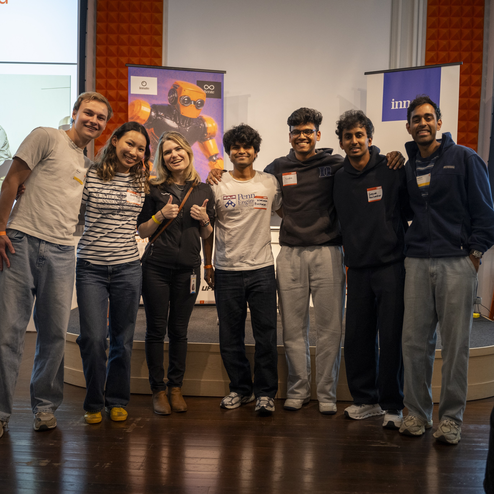
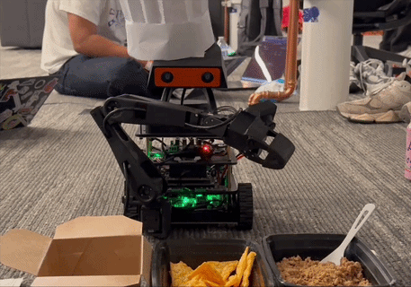
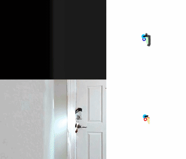
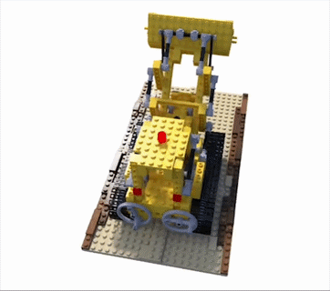
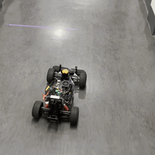
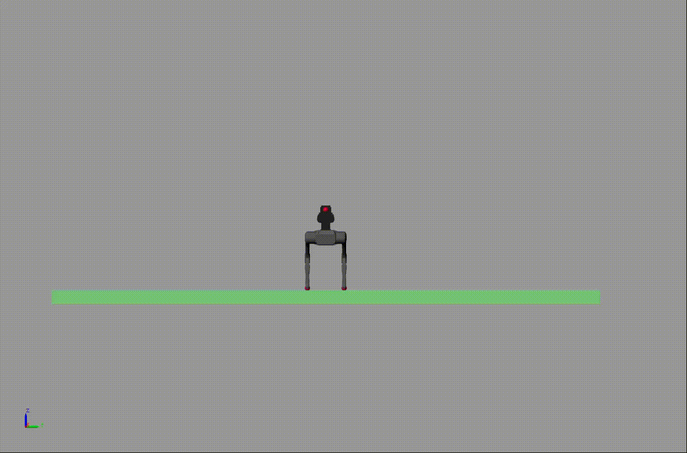
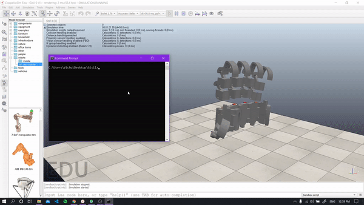

Visweswaran
Baskaran
Building robots that don't embarrass themselves in unstructured environments. Currently working on vision-language models and world models for autonomous navigation at Collaborative Robotics. MSE Robotics, Penn GRASP Lab. Interested in math, films, philosophy, and space. Usually reading something I should've read years ago, surfing, snowboarding, or unsuccessfully trying to become decent at racket sports.




Experience
2025–now
AI Research Engineer
Collaborative Robotics
Santa Clara
Building VLMs and world models for robots operating in unstructured, real-world environments.
2025
Graduate Research Assistant
UPenn JIRL
Philadelphia
Zero-shot semantic navigation under Prof. Antonio Loquercio on the DARPA TIAMAT platform.
2024
AI/ML Intern
Collaborative Robotics
Santa Clara
End-to-end conversational AI for robots — multi-modal vision, embodied task execution, on-device LLMs and custom voice models.
2023–25
Graduate Teaching Assistant
University of Pennsylvania
Philadelphia
TA for Deep Learning (ESE 3060), Advanced ML (CIS 6200), and NLP (CIS 5300).
2022
ML Intern
USC Viterbi — Dynamic Robotics Lab
Los Angeles
LSTM-based online dynamics estimation to improve MPC stability and tracking on loaded quadrupeds. IUSSTF-Viterbi Scholar.
2021–22
Deep Learning Researcher
IIT Madras Robotics Lab
Chennai
DDPG-based deep RL for safe position and force tracking in teleoperated systems under communication delays.
2021
Research Intern
IIT Roorkee — Chakrabarty Lab
India
Novel algorithm for shape formation, path planning, and collision avoidance for multi-agent systems in ROS and Gazebo.
2020–23
Researcher
NIT Trichy — Spider R&D
India
ML and robotics research; mentored 20+ students for national-level competitions.
Selected Projects
Gordy
Gordon Ramsay-inspired robot chef. Gemini for skill routing, ACT policies for food manipulation.

Abstract Semantic Navigation
Vision-Language Frontier Maps for zero-shot semantic navigation.

Foundation NeRF
Novel SLAM using NeRF + DINOv2 features for geometric consistency with fewer training epochs.

VLMaps Navigation
Semantic maps on F1Tenth with LLM-based path planning for conversational navigation.

MPC for Loaded Quadrupeds
LSTM online dynamics estimation to improve MPC stability and tracking on legged robots.

ASL Interpreter
3D-printed glove with sensor fusion and deep learning for ASL-to-speech on a smartphone.

Writing
Writing
Misc
reading
watching
visiting